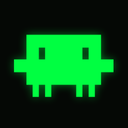
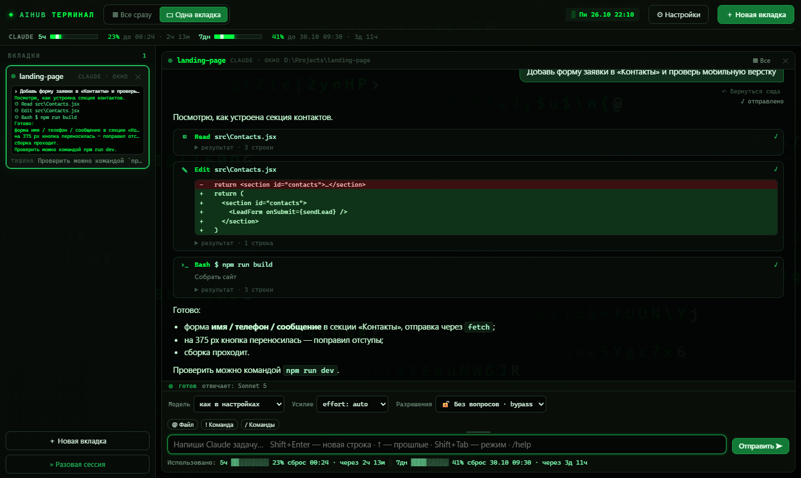
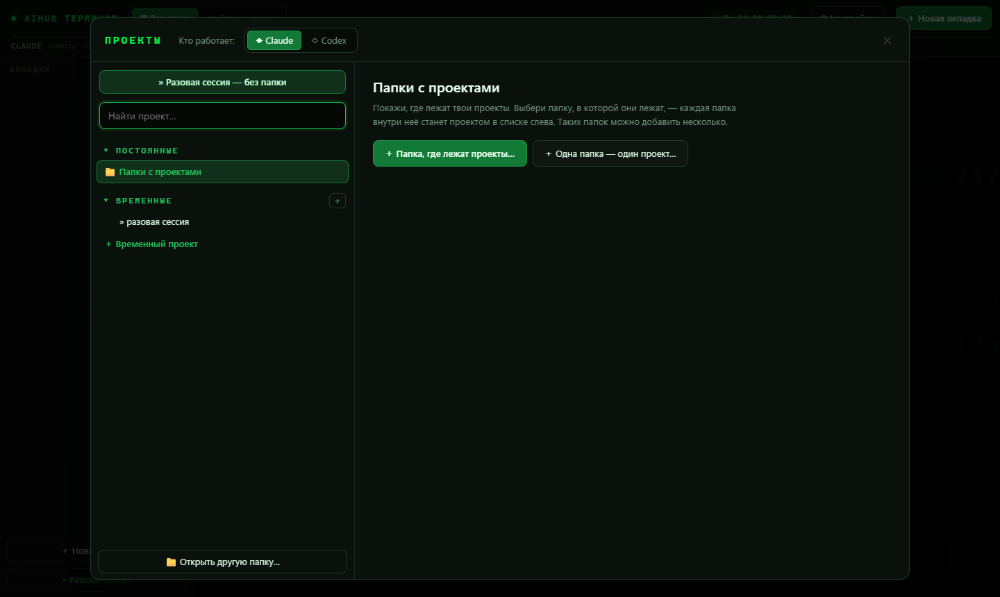
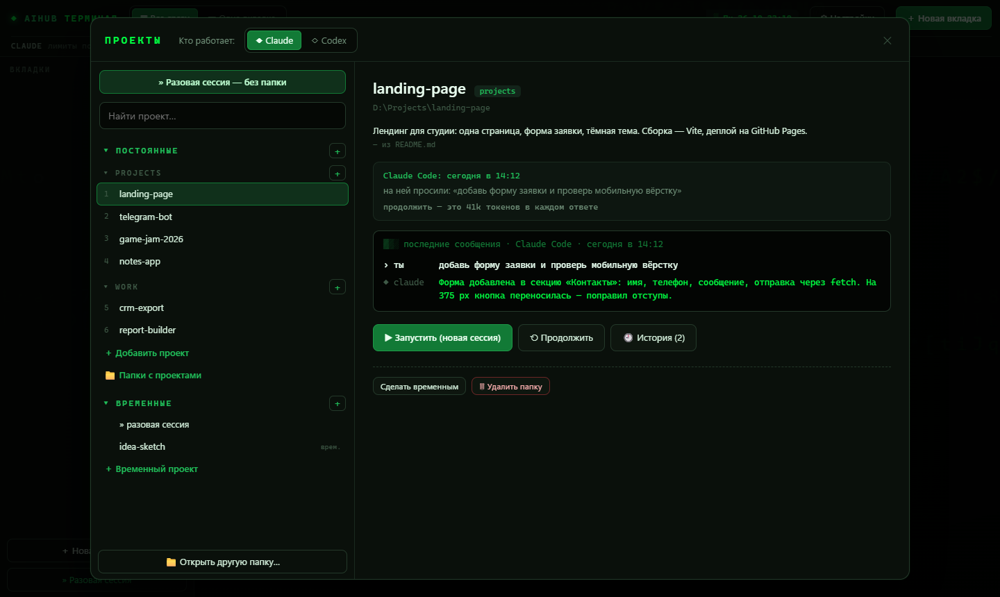

Окно для Claude Code и Codex. Проекты слева, переписка вместо консоли, каждая правка видна диффом, лимиты всегда сверху.

Показываешь, где лежат проекты, и каждая папка внутри становится проектом в списке. Папок может быть сколько угодно.
У проекта видно последнюю сессию: о чём просили и чем закончилось. «Продолжить» открывает именно её.
Расход за 5 часов и за неделю, время до сброса, размер контекста каждой вкладки.
«Все сразу»: все агенты плитками на одном экране, писать можно в любую.
Оба в одном окне. Можно передать разговор от одного другому, и он продолжит.
Кнопки вместо горячих клавиш, разрешения кнопками, картинку можно просто перетащить в окно.
Программа не подписана сертификатом, поэтому Windows может показать «Система Windows защитила ваш компьютер». Нажми «Подробнее» → «Выполнить в любом случае».
Окно начинает с пустого списка и само предлагает показать папки. Убрать папку из списка можно кнопкой, файлы на диске при этом остаются на месте.


Чтобы обновить, скачай новый архив и снова запусти «Установить.cmd»: папки и настройки сохранятся.
Чтобы удалить, запусти %LOCALAPPDATA%\Programs\AIHUB Terminal\Удалить.cmd. Проекты и сессии Claude останутся на месте.